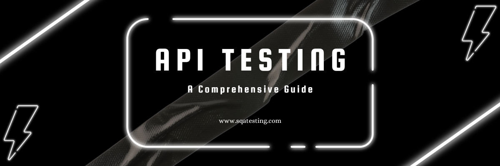

Mastering API Testing: A Comprehensive Guide
Introduction
API testing is a critical aspect of software quality assurance (SQA) that ensures the functionality, reliability, performance, and security of APIs. In this blog, we'll dive deep into the world of API testing, exploring its importance, tools, and best practices.
What is API Testing?
API testing involves testing the application programming interfaces (APIs) directly and as part of integration testing to determine if they meet expectations for functionality, reliability, performance, and security. Unlike UI testing, API testing focuses on the business logic layer of the software architecture.
Importance of API Testing
API testing is essential for several reasons:
- Early Detection of Bugs: API testing allows for early detection of bugs in the development cycle, reducing the cost and effort of fixing them later.
- Improved Security: APIs are often exposed to the internet, making them vulnerable to attacks. API testing helps identify security vulnerabilities.
- Performance Optimization: API testing ensures that APIs perform well under various conditions, including high load and stress.
- Integration Assurance: APIs are the backbone of modern applications, ensuring that different components work seamlessly together.
Types of API Testing
There are several types of API testing, each serving a specific purpose:
- Functional Testing: Ensures that the API functions as expected.
- Load Testing: Tests the API's performance under high load.
- Security Testing: Identifies vulnerabilities in the API.
- Validation Testing: Verifies the API's behavior and efficiency.
- Reliability Testing: Ensures the API can be consistently connected to and lead to consistent results.
Popular API Testing Tools
Several tools are available for API testing, each with its unique features and capabilities:
- Postman: A popular tool for API testing with a user-friendly interface and robust features.
- SoapUI: A comprehensive tool for testing SOAP and REST APIs.
- JMeter: An open-source tool primarily used for load testing but also supports API testing.
- Katalon Studio: A versatile tool that supports both API and UI testing.
- Swagger: A tool for designing, building, and documenting APIs, with built-in testing capabilities.
Best Practices for API Testing
To ensure effective API testing, follow these best practices:
- Understand the API's Purpose: Before testing, understand the API's functionality and intended use cases.
- Use Automation: Automate repetitive tests to save time and ensure consistency.
- Test for Edge Cases: Test the API with unusual or extreme inputs to ensure it handles them gracefully.
- Monitor Performance: Continuously monitor the API's performance to identify and address issues promptly.
- Document Test Cases: Maintain detailed documentation of test cases and results for future reference.
Conclusion
API testing is a vital component of software quality assurance that ensures the reliability, performance, and security of APIs. By understanding the importance of API testing, utilizing the right tools, and following best practices, you can significantly enhance the quality of your software applications.
Mejbaur Bahar Fagun
Software Engineer in Test